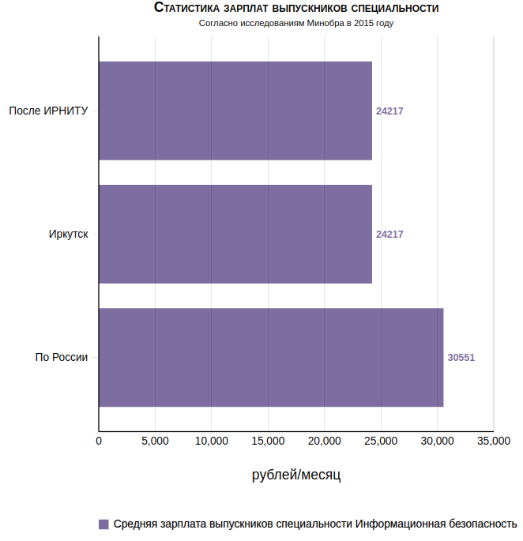

ИНФОРМАЦИОННАЯ БЕЗОПАСНОСТЬ
Описание программы Информационная безопасность 10.03.01 в ИРНИТУ
Зарплаты выпускников после окончания специальности Информационная безопасность в ИРНИТУ
Данные предоставлены Министерством образования в 2015 году как результат масштабного исследования и на данный момент являются самой свежей информацией от официальных источников на данную тему. Вы должны четко понимать, что зарплата в каждом конкретном случае зависит от вашей точки приложения усилий. На странице указаны средние зарплаты по опрошенным выпускникам. Все в ваших руках!
КЕМ РАБОТАТЬ
Выпускники направления «Информационная безопасность» работают в государственных органах и силовых структурах, где занимаются вопросами защиты данных от киберугроз. Например, в ФСБ, МВД, ФСТЭК, а также в организациях, владеющих персональными данными клиентов: банки, образовательные, медицинские учреждения. В том числе трудятся в IT-компаниях или на предприятиях, разрабатывающих и внедряющих новые методы и технологии защиты информации.
ПЕРСПЕКТИВЫ
С увеличением зависимости общества от цифровых технологий спрос на квалифицированных специалистов в области информационной безопасности стабильно высок. В 2024 году только на портале «Работа России» было открыто более 1500 вакансий по специальности «Информационная безопасность». Выпускники занимают позиции аналитиков, инженеров по информационной безопасности, менеджеров по рискам и аудиторов.
Список профессий, доступных после обучения
Программист. Системный администратор. Администратор БД. Аналтитик ИБ. Инженер ИБ. Дистанционный координатор безопасности. Киберследователь. Информатик (специалист по информационным технологиям). Куратор информационной безопасности. Консультант по безопасности личного профиля и т.д.